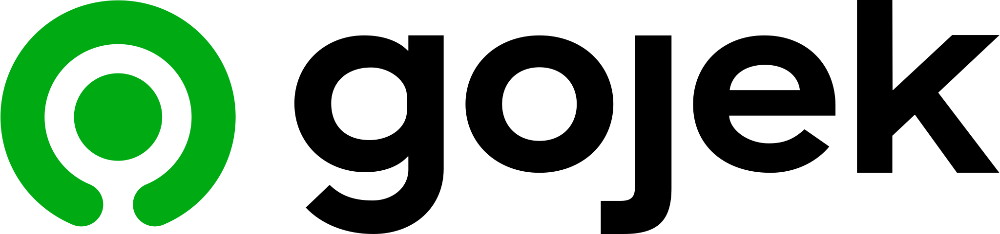

Lakukan seperti apa yang dilakukan oleh perusahaan-perusahaan ini!



Langkah kecil, dampak besar! Bersama, kita menciptakan perubahan nyata. Pilih air, energi hijau, dan daur ulang. Menuju dunia yang berkelanjutan!

berasal dari pembakaran bahan bakar fosil seperti batu bara, minyak bumi, dan gas alam.
Total emisi gas rumah kaca saat hutan ditebang,
limbah organik, aktivitas pertanian, dan produksi dan distribusi gas alam.
gas rumah kaca yang dihasilkan oleh aktivitas manusia, termasuk pertanian, penggunaan pupuk, dan pembakaran biomassa.
Jejak karbon adalah jumlah total emisi gas rumah kaca yang dihasilkan oleh individu, perusahaan, atau negara sebagai kontributor terhadap perubahan iklim.
Dampak jejak karbon yang signifikan termasuk pemanasan global, peningkatan suhu rata-rata, perubahan pola cuaca ekstrem, dan naiknya permukaan laut.
Industri energi fosil adalah penyumbang terbesar emisi karbon dioksida (CO2) global, diikuti oleh sektor transportasi, industri, dan deforestasi.
Beberapa berita menarik buat kamu baca.